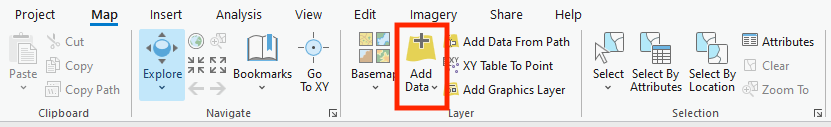
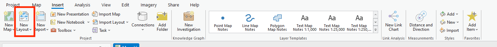
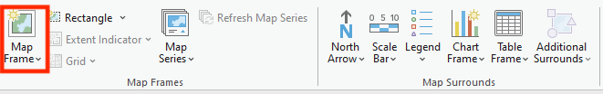
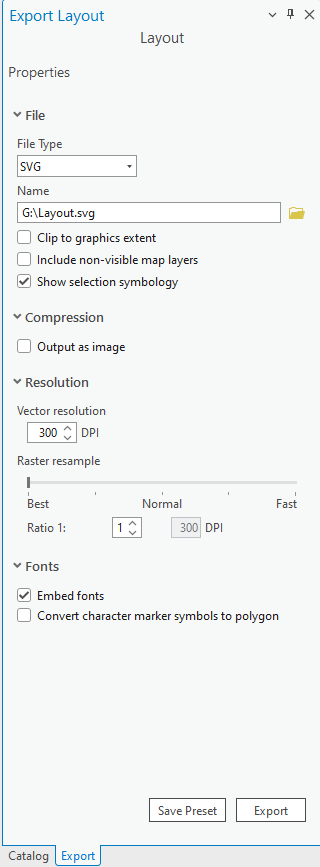
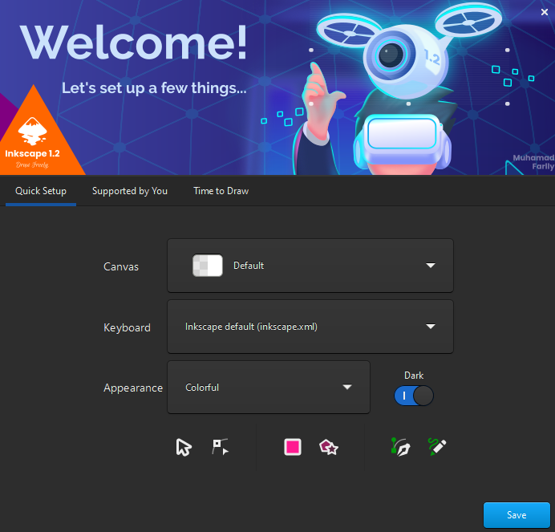

03/10/25
In this practical you will be introduced to the vector graphics
program Inkscape. We will be using it to edit and combine
Python plots and ArcGIS map documents.
By the end of this class you should be able to:
svg graphics from Python and ArcGIS into
InkscapeBefore we can start using Inkscape to create data visualisations, we need to have some data to visualise. For this practical, and the associated assessment, we will be combining spatial and aspatial data in a single overall visualisation.
This first section is mostly revision from what we covered in GEG5223 last year, although the ArcGIS interface is a little different to the version of ArcMap we used last year. Our aim is to make a map in ArcGIS that we can import into Inkscape. The map we are going to make is of catchments, with its hydrology overlain on a hillshade.
Inside the Map pane, we can click on
Add data and navigate to where we saved our data for
assessment 1. We are going to load the DEM for one of the catchments.
These notes will use catchment 75001

We are now going to do some simple analysis of the DEM. You can follow these prompts or explore other options. The main task here is to create a map that we can use within Inkscape.
In ArcGIS, we can search for tools using the search bar at the top of the screen and run them one by one:
Create a hillshade of the catchment DEM
(Hillshade (Spatial Analyst))
Create a D-Inf flow direction raster for the catchment
(Flow Direction (Spatial Analyst))
Create a flow accumulation raster for for the catchment
(Flow Accumulation (Spatial Analyst))
Now we have the data we want to display, we can start to think about how to visualise it as a map. We want to show where water is likely to accumulate across the landscape.
To add our map data to the layout, click on Insert and
then select New Layout:

We can then add a map frame to show our data inside our layout:

Once you have added your map data, explore the other options within the Layout View to add relevant things to your map (scale bar, north arrow, legend, etc).
Once we have finished making our map, we need to export it in the
svg format, by going to
Share > Export Layout:
And then making sure to select svg when exporting your
map:

We have already created several graphs during today’s live coding
session. Follow your notes from this part of the class to save one of
these graphs as an svg file. For this practical any
matplotlib plot in svg format will be
fine.
Inkscape is installed on all of the student PCs on campus, including
the ones in the Geography Computer Room and the library. To launch it,
search for Inkscape in the Start Menu, or navigate to the
Inkscape icon under I in the Start Menu.
It may take a little while to load, the first time you access it on a new machine, but once it loads it will prompt you for some settings, which you can leave as the defaults:

Before clicking through to Time to Draw and then
selecting New Document. The resulting window will look
something like this:

When you load Inkscape, you will see a rectangle in the centre of the screen, this is the page outline. By default this is set up to be a portrait orientated A4 page. This means that any graphics you create inside this boundary will be able to be placed on a page of that size.
For our assignment, we need a landscape A3 sized drawing area. We can
change this in File > Document Properties, which looks
like:

The areas highlighted in the above image show where to change our document to landscape, and to select the A3 paper size. Close the menu once you have done this.
svg filesNow we need to load our map and graph into Inkscape. To do this we
again use the File menu (File > Import...) and navigate
to where we saved our svg map and graph from earlier.
Select one of these, and click open. Repeat this process to load the
second image.
Like many other graphics programs, Inkscape is able to represent our
graphics as a series of layers. Open the layers tab from
Layer > Layers and Objects. It will open a small pane on
the right of the window:

If we press the small eye symbol beside the layer name
(Layer 1 by default), we can toggle the visibility of a
layer. If we click the little padlock, we can lock a layer from editing.
This allows us to build up complex visualisations as a series of
independent layers. Layers are shown on the screen in order, from top to
bottom, the same way that a GIS displays layers.
Lets split our graph and our map into different layers. Currently
they are both in Layer 1. Lets create a new layer, that we
will call graph, click on the plus symbol and input the new
name for the layer and click Add. Next, rename
Layer 1 to map, by double clicking on its name
and typing the new name in.
Now we have 2 layers, but both of our objects are in the same layer.
Lets move the graph into the new graph layer by right
clicking on it and selecting Move to Layer, and then
choosing the appropriate layer for the object. Note that when we are
creating new objects, they are automatically created in the layer that
is currently highlighted in the Layers Pane.
The key trick with svg files, is that they are built up
of a series of individual shapes and objects. In order to edit either
our map or our graph, we can right click on an object and select
Ungroup to break it into its component parts. you may need
to do this several times to get to the individual object you wish to
interact with. One of the most common reasons for doing this is to try
to increase our data-ink ratio, by removing superfluous lines from
graphics created in other programs.
The majority of the tools you will need to edit, annotate and add to your data visualisations can be found on the left of the screen. When you select one of these tools, the bar on the top of the screen changes to show the various settings available for the currently chosen tool. Of the many tools on offer, the most useful ones for our purposes are:

If you wish to create a copy of an object, and be able to edit it,
you need to Duplicate it rather than simply copy and paste
it. To do this you can right click on an object and select
Duplicate from the menu, or you can use the keyboard
shortcut Ctrl+D to duplicate the currently selected
objects.
When creating or editing objects, we can change the properties of
lines (thickness, colour, transparency, etc) through the fill and stroke
menu, which can be opened by right clicking on an object and selecting
Fill and Stroke.... This will open a pane on the right of
the window, which provides options to edit lines as well as changing the
fill colour or pattern of solid objects.
Once you have completed all of the editing you wish to do on your
maps and graphs, you can export them in a range of formats outlined in
the Save As menu. Note that you should always save
a copy of your work as an Inkscape SVG file to ensure you
can come back and make more edits in the future.
You can also export a high resolution png version of
your visualisation, using the Export PNG Image option in
the file menu:

This allows you to export the whole page, or a currently selected
object. You can increase the dpi (dots per inch) to export
higher resolution images. Remember to click the Export
button after choosing your output location, to actually start the export
process.